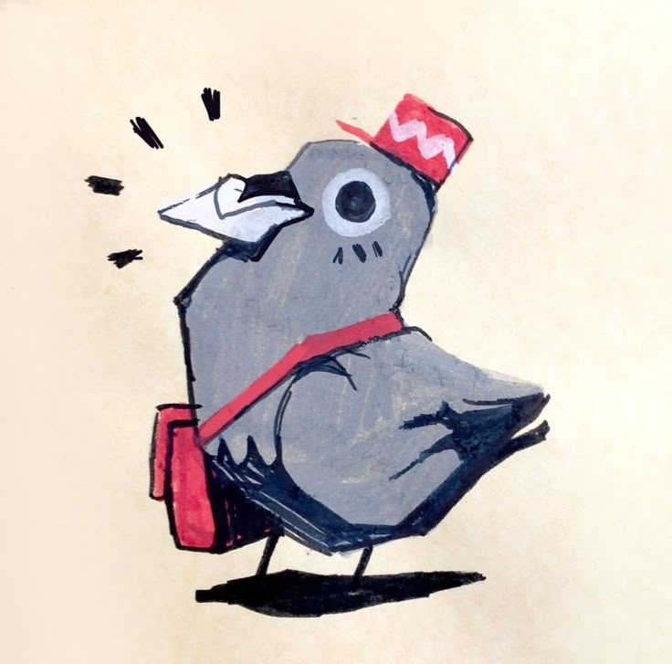
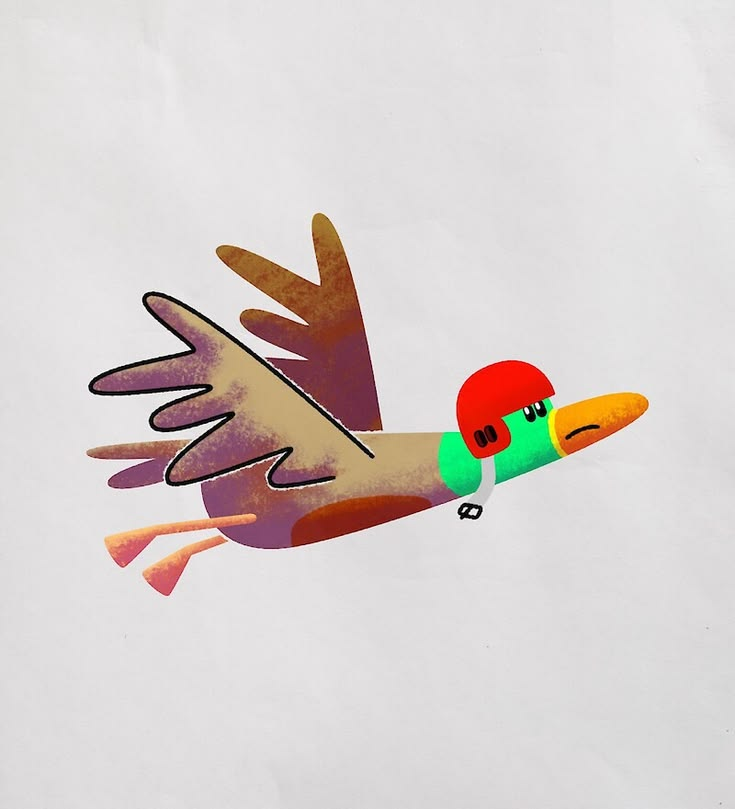
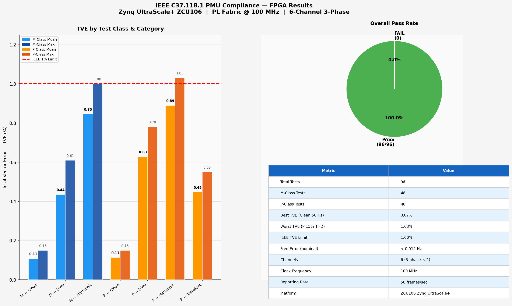
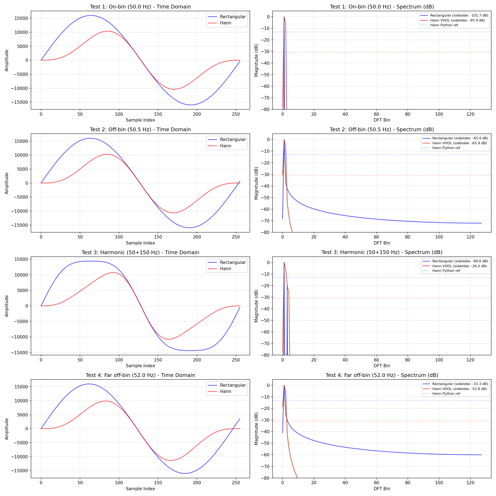
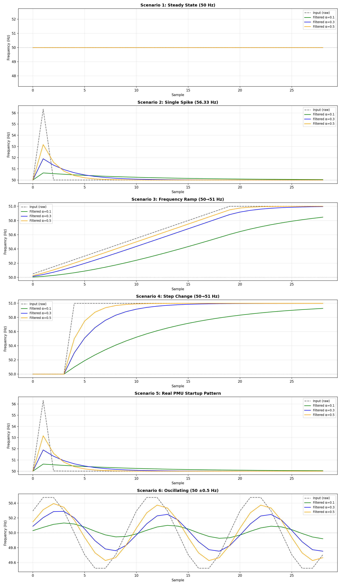
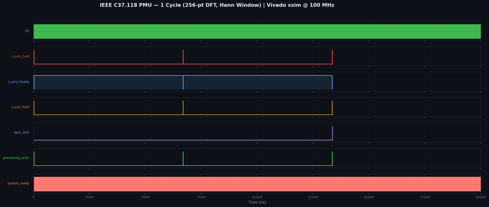
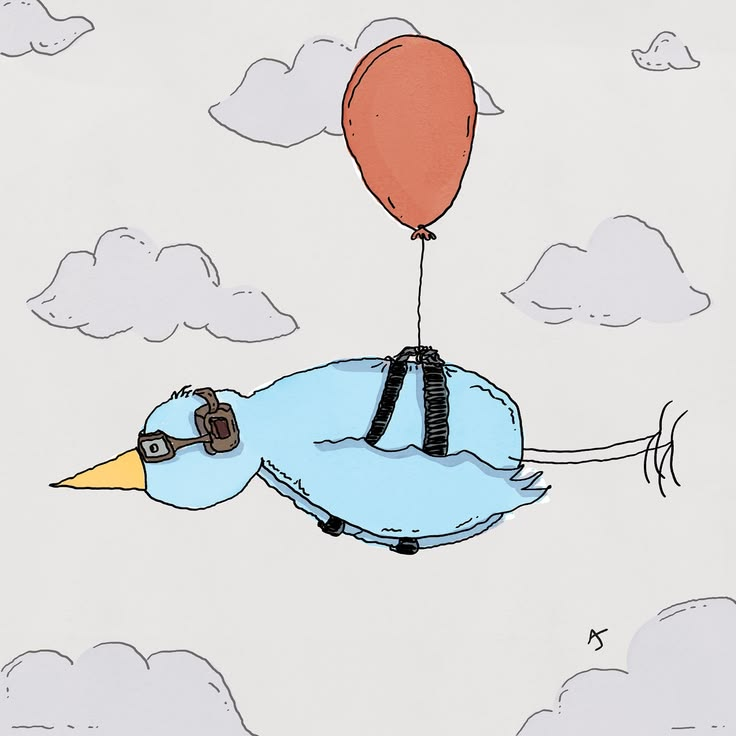

Power System Protocols
Two messengers for the grid. An IEEE C37.118.1 phasor measurement unit that reports six channels at 50 frames a second, and an IEEE 2664-2024 (STTP) publisher that carries the same measurements over TCP with no processor anywhere in the datapath.

A PMU samples the grid's voltages and currents, turns each cycle into a phasor (magnitude, angle, frequency, rate of change) and stamps it with GPS time. The PMU is the pigeon: it writes the letter. The protocol is how the letter travels.
C37.118 is the classic fixed-frame carrier. STTP is the newer one: it compresses the measurements with TSSC and negotiates a subscription over TCP. Both are built here on the same ZCU106 board.
IEEE C37.118.1 PMU
A 6-channel, 3-phase PMU in VHDL on the PL fabric. Signal processing runs in hardware; C37.118 framing, config frames and UDP to the PDC run on the ARM PS.






IEEE 2664 · STTP
A C37.118-class PMU and an STTP publisher entirely in programmable logic. No processor, no operating system, no software in the datapath: analog in one end, TCP/IP synchrophasor frames out the other. A stock, unmodified GPA cppapi subscriber decodes the stream.
Security
Grid telemetry drives protection decisions, so a forged or delayed phasor is a physical risk. What these two designs defend against, and what they leave open, is written down in the repos rather than implied.
{{ s.body }}
Confidentiality and authentication are not in either design today. The lab's post-quantum work signs and encrypts IEC 61850 GOOSE/SV frames with ML-KEM and ML-DSA, and is the intended route for protected substation traffic. See the Post-Quantum Post Office.